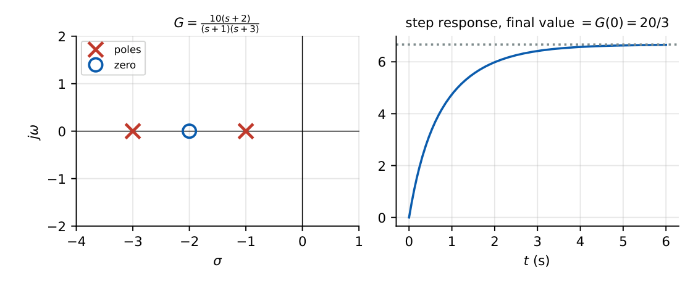
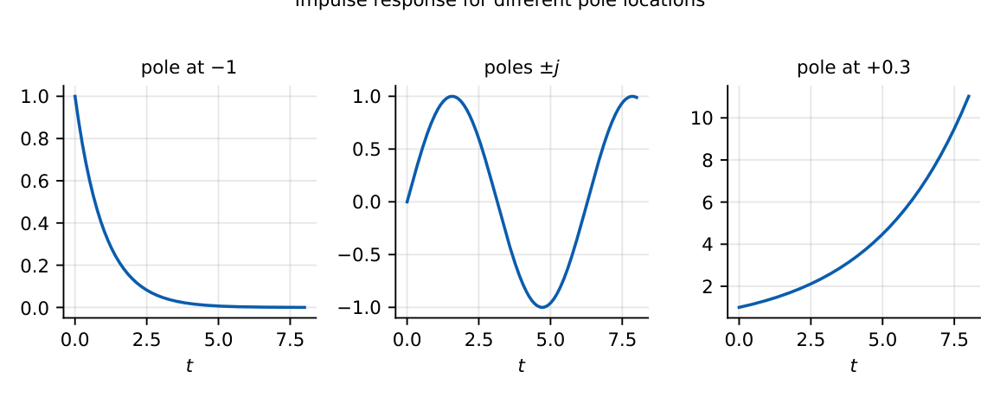

Transfer Function
In this chapter
Find \(G(s)\) from a differential equation or impulse response, identify poles, zeros, order, type and DC gain, and relate pole locations to the time response. Every GATE paper uses a transfer function somewhere.
3.1 Core concept
\(G(s)=\dfrac{\mathcal L\{\text{output}\}}{\mathcal L\{\text{input}\}}\Big|_{\text{all initial conditions}=0}=\mathcal L\{h(t)\}\), where \(h(t)\) is the impulse response.
It applies to linear time-invariant systems only; it describes the zero-state response, is independent of the input, and does not reveal the internal structure (hidden pole–zero cancellations lose information).
3.2 Derivation from a differential equation
For \(a_n y^{(n)}+\dots+a_0y=b_mx^{(m)}+\dots+b_0x\), take the Laplace transform with zero initial conditions: \[ G(s)=\dfrac{Y(s)}{X(s)}=\dfrac{b_ms^m+\cdots+b_0}{a_ns^n+\cdots+a_0}=K\,\dfrac{\prod(s-z_i)}{\prod(s-p_k)}. \]
\(\ddot y+5\dot y+6y=2\dot x+x\ \Rightarrow\ G(s)=\dfrac{2s+1}{s^2+5s+6}=\dfrac{2s+1}{(s+2)(s+3)}\): zero at \(-0.5\), poles \(-2,-3\).
3.3 Poles, zeros, order, type, gain
| Term | Meaning |
|---|---|
| Pole | root of the denominator; \(G\to\infty\); each gives a mode \(e^{pt}\) |
| Zero | root of the numerator; \(G=0\) |
| Characteristic equation | denominator \(=0\) (for a closed loop: \(1+G(s)H(s)=0\)) |
| Order | degree of the denominator (number of poles) |
| Type | number of poles at \(s=0\) of the open-loop \(GH\) |
| DC gain | \(G(0)\) for a type-0 system (steady-state step gain) |
| Proper / strictly proper | \(m\le n\) / \(m<n\) (physical systems are proper) |
| Relative degree | \(n-m\); high-frequency slope \(=-20(n-m)\) dB/dec |

3.4 Standard transfer functions
| Element | \(G(s)\) | Note |
|---|---|---|
| Integrator | \(1/s\) | pole at origin |
| Differentiator | \(s\) | zero at origin |
| Gain | \(K\) | static |
| First-order lag | \(\dfrac{K}{\tau s+1}\) | time constant \(\tau\) |
| Second-order | \(\dfrac{\omega_n^2}{s^2+2\zeta\omega_ns+\omega_n^2}\) | \(\zeta,\omega_n\) |
| Transport delay | \(e^{-sT}\) | non-rational; phase \(-\omega T\) |
| Lead / lag network | \(\dfrac{1+\alpha\tau s}{1+\tau s}\) | compensators |
3.5 Physical interpretation of poles and zeros
A pole at \(s=p\) produces the mode \(e^{pt}\): negative real part decays, positive grows, imaginary part sets the oscillation frequency. Zeros do not create modes but shape their amplitudes (and can cause undershoot if in the right half plane).

\(G(s)=\dfrac{s+3}{(s+1)(s+2)}=\dfrac{2}{s+1}-\dfrac1{s+2}\Rightarrow h(t)=(2e^{-t}-e^{-2t})u(t)\).
\(\dot y+2y=x\), \(y(0)=1\), \(x=u(t)\): \(Y=\dfrac1{s(s+2)}+\dfrac{1}{s+2}\); the first term is \(G(s)X(s)\) (zero-state), the second the zero-input part. \(G(s)\) alone gives only the first.
If the unit-step response is \(y(t)=1-e^{-2t}\), then \(Y(s)=\dfrac{2}{s(s+2)}\) and \(G(s)=sY(s)=\dfrac{2}{s+2}\).
Steady-state gain: \(G(0)\). High-frequency behaviour: \(G\approx b_m/(a_n s^{n-m})\). Impulse response \(=\mathcal L^{-1}\{G\}\); step response \(=\mathcal L^{-1}\{G/s\}\); ramp response \(=\mathcal L^{-1}\{G/s^2\}\).
(i) Type \(\neq\) order: \(1/[s(s+1)]\) is type 1, order 2. (ii) A pole–zero cancellation in the right half plane still leaves an unstable internal mode. (iii) \(G(s)\) ignores initial conditions.
Q1. The impulse response of \(G(s)=\dfrac{1}{s+4}\) is (A) \(e^{4t}\) (B) \(e^{-4t}u(t)\) (C) \(u(t)\) (D) \(\delta(t)\).
Q2. The order of \(G(s)=\dfrac{s+1}{s^2(s+3)}\) is (A) 1 (B) 2 (C) 3 (D) 4.
Q3. A transfer function is defined with (A) zero input (B) zero initial conditions (C) unit input (D) nonzero state.
Answers: Q1 (B). Q2 (C). Q3 (B).
Q4. The step response of a system is \(1-2e^{-t}+e^{-2t}\). Its transfer function is (A) \(\dfrac{2}{(s+1)(s+2)}\) (B) \(\dfrac{s}{(s+1)(s+2)}\) (C) \(\dfrac{1}{(s+1)(s+2)}\) (D) \(\dfrac{2s+1}{(s+1)(s+2)}\).
Q5. For \(G(s)=\dfrac{100}{s^2+10s+100}\), the DC gain and \(\zeta\) are (A) 1, 0.5 (B) 10, 0.5 (C) 1, 1 (D) 100, 0.1.
Answers: Q4 (A): \(Y=\frac1s-\frac2{s+1}+\frac1{s+2}=\frac{2}{s(s+1)(s+2)}\), so \(G=sY=\frac2{(s+1)(s+2)}\). Q5 (A).
Q6. \(G(s)=\dfrac{20(s+1)}{(s+2)(s+5)}\). \(G(0)=\) .
Q7. \(G(s)=\dfrac{K}{s^2+4s+13}\) has poles \(-2\pm jb\); \(b=\) .
Answers: Q6: \(20/10=2\). Q7: \(b=3\).
Q8. \(G=\dfrac{s-1}{(s+1)(s+2)}\). Which are true? (A) stable (B) has a right-half-plane zero (C) type 0 (D) order 3.
Answers: Q8: (A), (B), (C).
A system’s impulse response is \(h(t)=e^{-t}\sin 2t\ u(t)\); then \(G(s)=\dfrac{2}{(s+1)^2+4}\), poles \(-1\pm j2\), \(\omega_n=\sqrt5\), \(\zeta=1/\sqrt5\).
T1. Find \(G(s)\) for \(\dddot y+3\ddot y+2\dot y=x\). Is it type 1?
T2. A system has \(h(t)=\delta(t)+e^{-t}u(t)\). Find \(G(s)\).
Answers: T1: \(1/[s(s+1)(s+2)]\), type 1. T2: \(1+\dfrac1{s+1}=\dfrac{s+2}{s+1}\).
- \(G=Y/X\) (zero ICs) \(=\mathcal L\{h\}\); LTI only.
- Poles \(\to\) modes; zeros shape amplitude; order \(=\deg\) denominator; type \(=\#\) poles at \(0\).
- DC gain \(=G(0)\); step response \(=\mathcal L^{-1}\{G/s\}\); \(G=s\cdot Y_{step}\).
- Physical systems: proper, \(m\le n\).